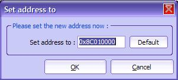
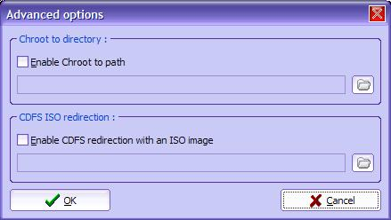
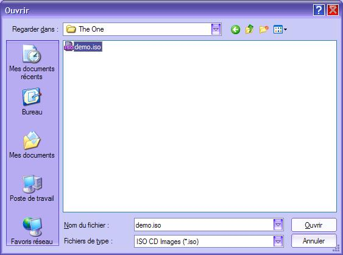
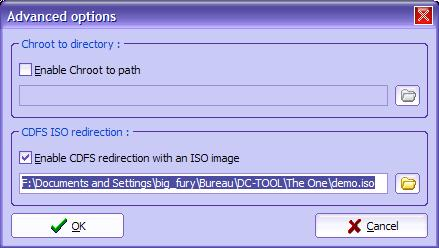
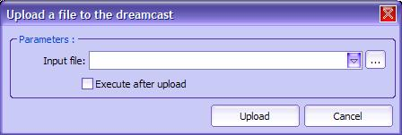
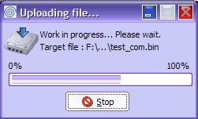
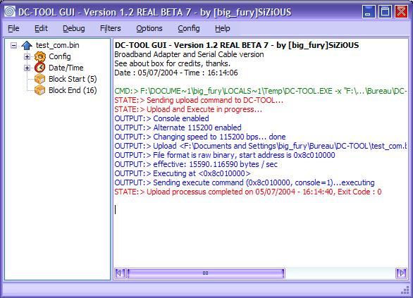

| 4. Envoyer un programme à la Dreamcast |
Ce chapitre traite de l'upload (=envoi) d'un programme à la Dreamcast, soit l'envoi d'un fichier afin de l'executer.
1) Vérification de la connexion
Avant de commencer, veuillez vérifier les points suivants :
Une fois que vous avez vérifié la check list, vous pouvez tester la connexion, si vous ne l'avez pas fait.
2) Paramétrer les options d'envoi
a) Introduction
Avant d'envoyer un programme sur la Dreamcast, vous pouvez configurer les options d'envoi. Il peut s'agir (en règle générale) :
b) Paramétrage de la connexion
Normalement, vous avez déjà paramétré la connexion. Si ce n'est pas le cas, consultez le chapitre Première utilisation de DC-TOOL GUI pour l'utilisation de l'assistant de configuration, sinon vous pouvez consulter le chapitre Présentation des Menus.
c) Définition de l'adresse de départ (non recommandé)
Ceci n'est pas nécessaire. Pourtant, l'option existe au cas ou vous aurez besoin de la changer dans un cas spécifique. Si vous voulez uploader un fichier simplement pour le tester ou l'executer, vous pouvez passer ce paragraphe. Normalement elle sert seulement pour la récéption de données.
Rendez vous dans le menu Edition > Définir l'adresse à... . Vous voyez apparaître une boîte de dialogue :

Vous avez un bouton Défaut pour rétablir l'adresse de base. Il n'est pas recommandé de changer cette valeur, c'est pour cela que le bouton Défaut existe. Tapez votre adresse ici en base hexadécimale puis cliquez sur OK.
d) Module de vérification des fichiers binaires
Consultez le chapitre Configuration du module de vérification des fichiers binaires pour plus d'informations à ce sujet.
e) Options avancées
Les options avancées sont disponible dans le menu Options > Options avancées... .

Vous avez deux options disponibles :
Chroot to path (=Changer de chemin...?) est une option... dont je ne connais pas vraiment l'utilité. Je sais comment elle fonctionne, mais je ne vois pas l'intérêt sous Windows. Vous devez être un super utilisateur comme spécifié dans l'aide de DC-TOOL original ;)
En revanche, redirection d'images CD ISO est une option interressante. En effet, il est possible de simuler la présence d'un CD au programme Dreamcast (marche seulement avec les programmes utilisant KallistiOS, semblerai-t-il).
Pour cela il faut créer une image ISO du CD en question (comme décrit dans le tutorial de Marcus, sauf qu'il faut s'arrêter avant l'ajout du BootStrap).
Une fois l'image CD prête, cliquer sur le petit bouton en forme de dossier (avant bien sur, cliquer sur la case à cocher activer). Une boite de dialogue chercher le fichier apparaît. Sélectionnez le fichier ISO à utiliser.

Cliquez sur Ouvrir.

Cliquez sur OK.
Vous n'avez plus qu'a charger le fichier binaire principal sur la Dreamcast (comme expliqué dans le paragraphe suivant), DC-TOOL GUI fera le reste.
3) Envoyer le programme à la Dreamcast
Pour uploader (=envoyer) un fichier, allez dans le menu Fichier, puis sélectionnez Envoyer fichier... . Une boîte de dialogue apparaît :

Vous voyez une boîte de dialogue avec plusieurs contrôles. Cliquez sur le bouton à droite de la zone de texte pour sélectionner un fichier sur votre disque dur.
Si vous souhaitez executer le fichier après l'envoi, cochez la case Executer après l'envoi du fichier (par défaut). Une fois que vous aurez terminé, cliquez sur Envoyer.
Note : Vous avez accès à un historique en cliquant sur la flèche de la zone de texte. Pour plus d'informations, consultez le chapitre Historique.
Le programme sera maintenant envoyé sur la Dreamcast. Vous pouvez suivre son cours dans la fenêtre de progression qui s'affiche.

Vous pouvez suivre la progression grâce à la barre. Elle se remplit correctement pour les fichiers BIN. Pour les fichiers ELF elle se remplit puis se vide car le DC-TOOL GUI va envoyer section par section le fichier plutôt que tout d'un coup.
Vous pouvez annuler le transfert en cliquant sur Arrêter (non recommandé). Effectivement si vous annulez, vous devez redémarrer la Dreamcast (en insérant le CD DC-LOAD correspondant à votre mode de connexion) car DC-LOAD ne supporte pas l'abandon de transfert (malheuresement).
Une fois que l'envoi est terminé, la fenêtre de progression se réduit. Vous avez accès au debug log (=sorties du programme DC-TOOL et sorties du programme).

Pour plus d'information sur la présentation du logiciel, consultez le chapitre Présentation des sorties de debuggage.
Vous voyez qu'il y'a beaucoup de texte écrit. Vous avez la possibilité de retirer les lignes inutiles. Pour cela, consultez le chapitre traitant des Filtres.
Bravo! Normalement, vous avez des choses sur votre écran de Dreamcast (tout dépend de la nature du programme...).
Vous pouvez profiter dès maintenant de la simplicité de DC-TOOL GUI pour tester vos projets ou essayer des démos !